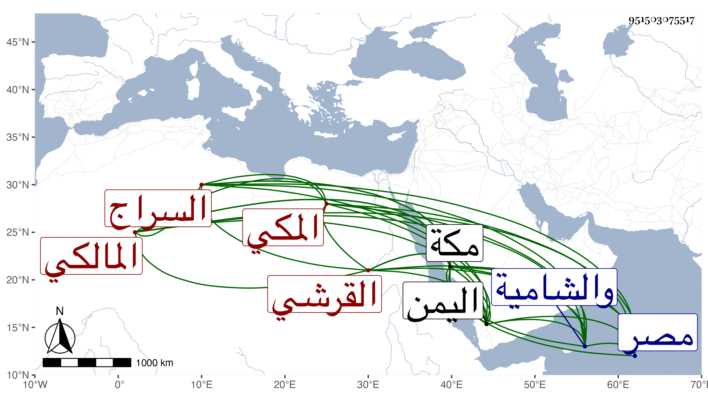

0902Sakhawi.DawLamic.ITO20230111-ara1.EIS1600.951503075517
Biography ID: 951503075517
279
عمر بن حسين بن علي بن أحمد بن عطية بن ظهيرة السراج القرشي المكي المالكي ويعرف كسلفه بابن ظهيرة . ولد سنة إحدى وخمسين وسبعمائة بمكة ونشأ بها فسمع من العز بن جماعة والكمال بن حبيب والجمال بن عبد المعطي وآخرين ، وأجاز له الصلاح بن أبي عمر وابن أميلة وابن الهبل والعماد بن كثير والصلاح العلائي والأسنائي والأذرعي وجماعة وقرأ في الرسالة الفرعية فلم ينجب ، ودخل الديار المصرية والشامية للاسترزاق غير مرة ، وكذا دخل اليمن ثم انقطع بمكة بعد ما حسن حاله في أمر دنياه حتى مات بها في ذي القعدة سنة ثلاث وعشرين . ذكره الفاسي في مكة والتقي بن فهد في معجمه .
